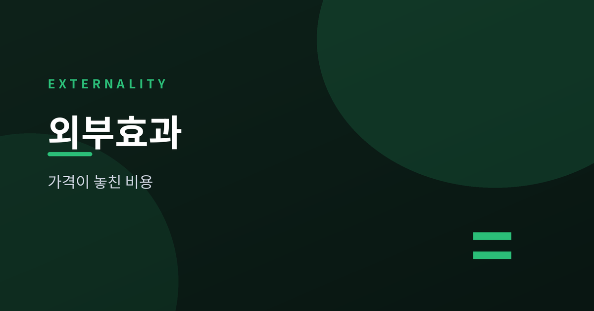
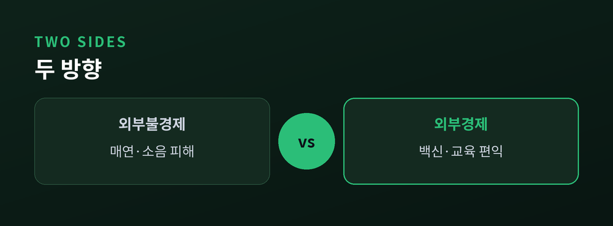
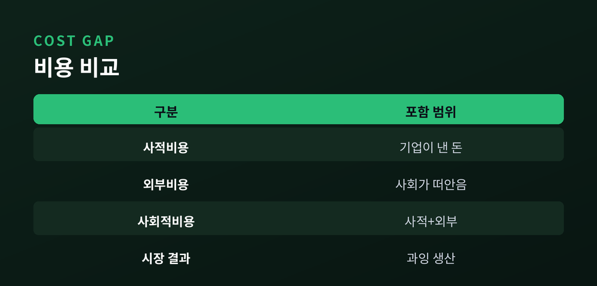
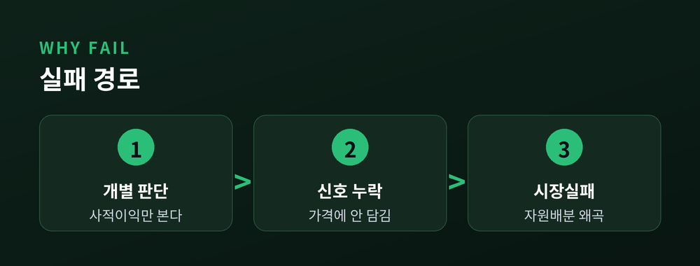
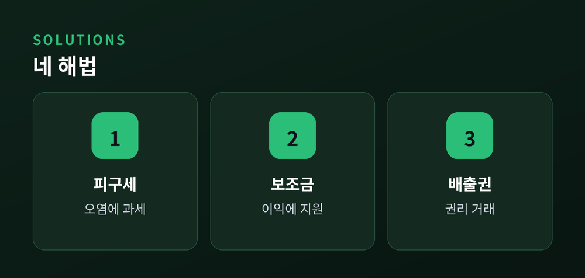

시장이 놓치는 비용과 편익

우리는 물건값에 모든 비용이 담겨 있다고 생각합니다. 그러나 시장이 미처 계산하지 못하는 비용과 편익이 있습니다. 경제학은 이를 외부효과라 부릅니다. 오늘은 이 개념을 차근차근 풀어보겠습니다.
외부효과는 한 경제주체의 행위가 제3자에게 영향을 주지만, 그에 대한 보상이 오가지 않는 현상을 말합니다. 가격이라는 신호를 거치지 않고 이익이나 손해가 전달된다는 점이 핵심입니다.
방향에 따라 둘로 나뉩니다. 남에게 손해를 끼치는 외부불경제와, 남에게 이득을 주는 외부경제입니다. 공장 매연이나 소음은 전자에 속하고, 이웃의 예방접종이 나의 감염 위험을 낮추는 것은 후자에 속합니다.

기업이 물건을 만들며 실제로 지불하는 돈이 사적비용입니다. 여기에 오염 피해처럼 사회가 대신 떠안는 몫을 더한 것이 사회적비용입니다.
문제는 이 둘 사이의 틈에서 생깁니다. 기업은 사적비용만 보고 결정하는데요. 그래서 오염을 일으키는 상품은 사회가 원하는 양보다 많이 생산되고, 백신처럼 이로운 것은 오히려 적게 소비됩니다.
"가격표에 적히지 않은 비용은 사라지는 것이 아니라 누군가에게 떠넘겨질 뿐입니다."

시장은 보통 자원을 효율적으로 배분합니다. 그러나 외부효과가 끼면 이 조율이 어긋납니다. 각자는 자신의 이익과 비용만 따지므로, 사회 전체의 손익과 어긋난 선택을 하게 됩니다.
그 결과 자원이 적정 수준으로 쓰이지 못합니다. 경제학은 이런 상태를 시장실패라 부릅니다. 시장이 무능해서가 아니라, 신호에 담기지 않은 정보가 있기 때문입니다.

해법의 공통 목표는 외부효과를 가격 안으로 끌어들이는 '내부화'입니다. 대표적으로 네 가지가 있습니다.
피구세는 오염량만큼 세금을 매겨 사적비용을 사회적비용에 맞춥니다. 반대로 이로운 활동에는 보조금을 줍니다. 코즈 정리는 재산권이 분명하고 협상비용이 낮다면 당사자끼리 스스로 해결할 수 있다고 봅니다. 배출권 거래제는 오염 배출 권리를 시장에서 사고팔게 합니다.
다만 완벽한 해법은 없습니다. 피해액을 정확히 매기기 어렵고, 협상비용이 크면 코즈식 해결은 힘듭니다. 각 방식의 장단점을 견주어 상황에 맞게 골라야 합니다.

외부효과는 시장이 놓치는 비용과 편익에 관한 이야기입니다. 매연도, 백신도 결국 가격이 담지 못한 신호였습니다. 값을 매기기 어려운 것들을 어떻게 셈에 넣을지 고민하는 순간, 우리는 시장을 조금 더 넓게 보게 됩니다.
참고 소스